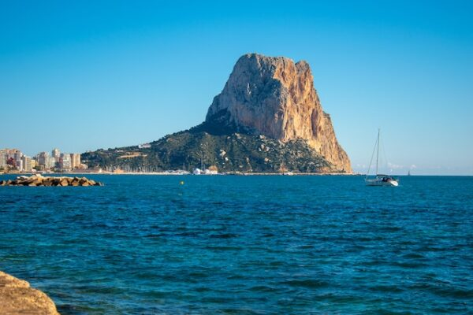
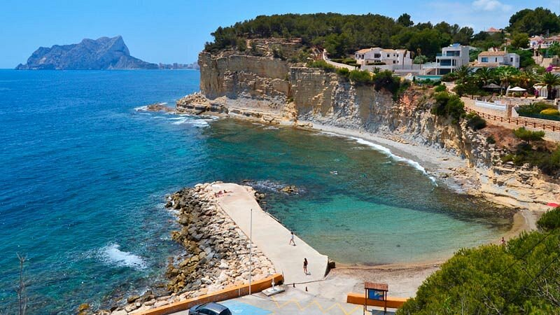
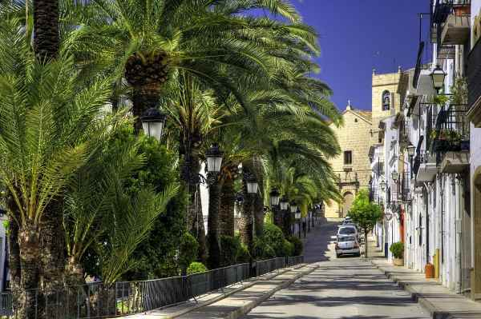
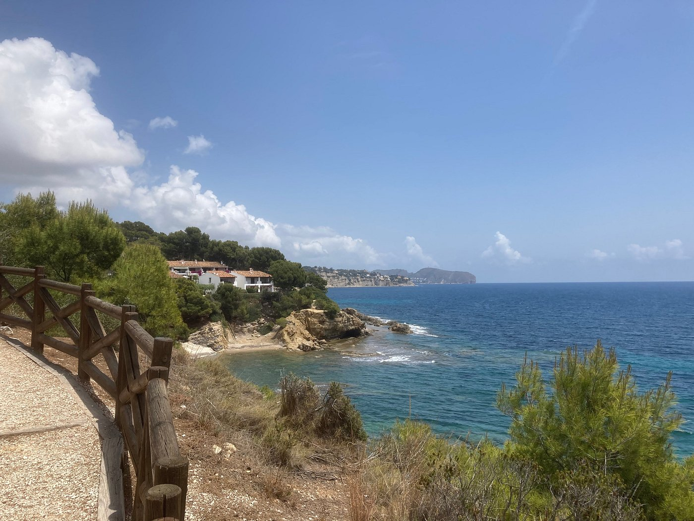
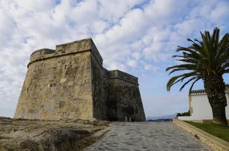
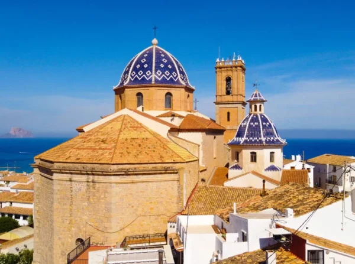
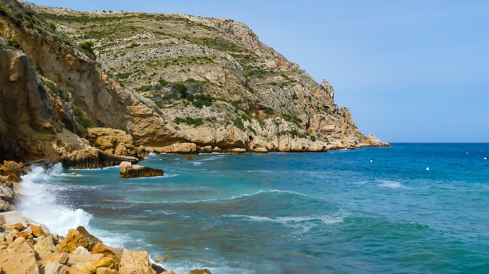
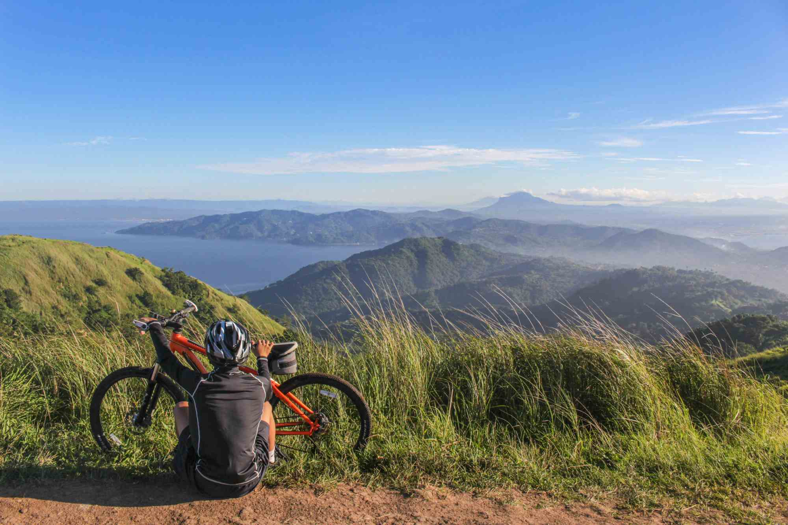
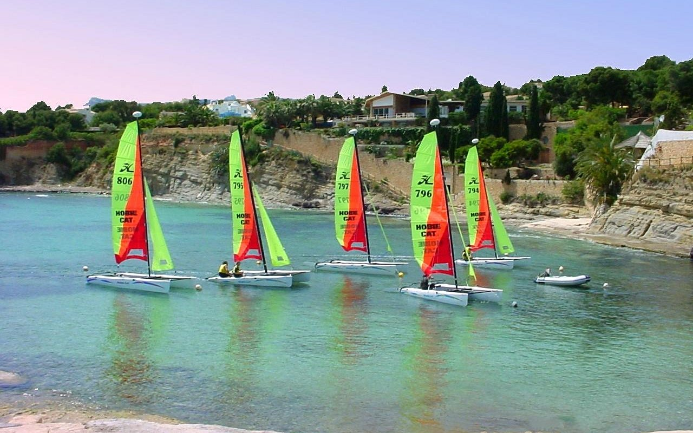

Natuurlijke schoonheid, rijke geschiedenis en charmante dorpjes wachten op je in Benissa en de omliggende regio aan de Costa Blanca in Spanje. Of je nu een avontuurlijke reiziger bent die graag de natuur verkent, een geschiedenisliefhebber die de oude bezienswaardigheden wil ontdekken, of gewoon wilt ontspannen op prachtige stranden, Benissa heeft voor ieder wat wils. Hier is onze top 10 van bezienswaardigheden in Benissa en de omliggende gebieden.
1. Peñón de Ifach
Net buiten Benissa ligt de indrukwekkende rots van Peñón de Ifach, een natuurpark en een populaire plek om te wandelen en te genieten van een panoramisch uitzicht over de Costa Blanca.
Sinds z'n ontstaan in de Peñon de Ifach gedomineerd door de natuur. Dit natuurwonder herbergt dan ook een rijke verzameling aan zeldzame planten die enkel voorkomen op deze rots. Bovendien is het een vaste bestemming voor vele vogels. Aan de voet van de rots is er een lagune die vooral bij flamingo's populair is. Ook bevindt er zich een moeras met een oppervlakte van maar liefste 45 hectare. Bovendien heb je een schitterend uitzicht over het zoutwatermeer Las Salinas, de oude stadskern van Calpe en ook het buureiland Ibiza. Vanwege de grote verscheidenheid aan planten en vogels is deze rots uitgeroepen tot uniek natuurpark: Parc Natural
Lang geleden hebben de Iberiërs en Romeinen wel nagedacht om deze locatie in de militaire strategie op te nemen. In de 15de eeuw werden er zelfs meer landinwaarts muren om het dorp gebouwd, waarvan sommige muren het hebben overleefd (Torreón de la Peça).
Naar de top van de rots van Calpe
De wandeling van de parking helemaal naar de top van "de rots van Calpe" en terug duurt tussen 2,5 uur en 3 uur, inclusief een rustpauze. De wandeling naar de top van "de rots van Calpe" is minder zwaar dan bijvoorbeeld de wandeling naar de grotten van Cova Tallada in Jávea, maar neem ook hier voldoende water mee. Vergeet ook je zonnecrème en zonnebril niet mee te nemen.
Het park is gans het jaar gratis toegankelijk, behalve in oktober en november (dan is het regenseizoen). Het is mogelijk de rots via verscheidene klimroutes te beklimmen. Er zijn op elf routes op de zuidkant en zes op de noordkant, dit is afhankelijk van niveau / conditie. Maar iedere route biedt een mooie beleving en fantastische uitzichten.
2. Cala Baladrar
Cala Baladrar is nog een juweeltje aan de kust van Benissa. Dit kleine strand heeft een intieme sfeer en wordt omgeven door rotsachtige kliffen en pijnbomen. De baai staat bekend om zijn rust en prachtige landschap, waardoor het de perfecte plek is om te ontsnappen aan de drukte en te genieten van deze natuurlijke schoonheid.
Een rotspartij verdeelt deze baai in El Baladrar en La Goleta. Het begint met de kiezelstenen Barranco "dels Sesters" en eindigt met een klif van 30 meter hoog. De baai is beschermd tegen de oostelijke wind en het ondiepe, heldere water en het overvloedige waterleven maken het de perfecte plek.
Hoewel Cala Baladrar geen grote voorzieningen heeft, is er een charmante Xiringuito Olala (strandbar) waar je kunt genieten van tapas en drankjes met uitzicht op de zee. Dit strand is ook geliefd bij snorkelaars vanwege het kristalheldere water en de diverse onderwaterfauna.
3. Historisch Centrum van Benissa
Een van de meest betoverende aspecten van Benissa is het historische stadscentrum. De historische herenhuizen uit de 18e eeuw laten je de architectonische pracht van Benissa zien. Je kunt door de smalle straatjes slenteren en de goed bewaard gebleven gevels bewonderen. Wandel door de geplaveide straten en bewonder de goed bewaard gebleven architectuur. De kerk van de Purissima Xiqueta, met zijn gotische en neoklassieke elementen, is een opvallende bezienswaardigheid in het centrum. Slenter langs de Plaza del Portal de El Calvari, een pittoresk plein omringd door kleurrijke gebouwen en gezellige cafés. Vergeet niet om wat tijd te nemen om de sfeer op te snuiven en te genieten van de lokale keuken in een van de charmante restaurants.
Kerk van de Purissima Xiqueta
Fraai indrukwekkend, karakteristiek wit bouwwerk in neogotische stijl van binnen te bezichtigen. In de 20er jaren van de vorig eeuw is deze kerk door de inwoners zelf gebouwd en kreeg vanwege zijn afmetingen van bijna 60 mtr lengte en ca. 30 meter hoogte de bijnaam: Zeekathedraal. Afhankelijk van het tijdstip op de dag kan men meer of wat minder genieten van de geraffineerde lichtinval, ook op het met goud behangen beeld van de beschermheilige boven het altaar.
4. Playa de la Fustera

Playa de la Fustera is een van de mooiste stranden in de omgeving van Benissa. Dit prachtige zandstrand wordt omgeven door rotsachtige kliffen en pijnbomen, wat het een idyllische setting geeft. Het strand staat bekend om zijn rust en natuurlijke schoonheid, waardoor het de perfecte plek is om te ontspannen en te genieten van de Middellandse Zee.
Het strand heeft kristalhelder water en is ideaal voor zwemmen en snorkelen. Er zijn ook verschillende restaurants en bars langs de kust waar je kunt genieten van lokale gerechten en verfrissende drankjes met uitzicht op de zee.
5. Paseo Ecológico
De Paseo Ecológico is een prachtig wandelpad langs de kust dat perfect is voor een ontspannende wandeling of een yogasessie in de open lucht. Dit pad biedt adembenemende uitzichten over de Middellandse Zee en is omgeven door natuurlijke vegetatie.
Het pad is goed onderhouden en toegankelijk voor wandelaars van alle niveaus. Het is de perfecte plek om te genieten van de rust en de natuurlijke schoonheid van de Costa Blanca.
6. Moraira
Moraira is een charmante kustplaats die bekend staat om zijn prachtige stranden, gezellige haven en authentieke Spaanse sfeer. Deze voormalige vissersplaats heeft zich ontwikkeld tot een populaire toeristische bestemming, maar heeft zijn traditionele karakter behouden. Het historische centrum van Moraira is een bezoek waard met zijn smalle straatjes, witte huizen en gezellige pleinen.
Moraira heeft een prachtige haven waar je kunt genieten van verse vis en zeevruchten in een van de vele restaurants langs de kust. De stad staat ook bekend om zijn uitstekende golfbanen en biedt tal van watersportmogelijkheden. Het kasteel van Moraira, gelegen op een rotsachtige uitloper, biedt een prachtig uitzicht over de baai en is een must-see voor bezoekers.
7. Altea
Altea is een charmante kustplaats die bekend staat om zijn witte huizen en smalle straatjes. Het historische centrum van Altea is een bezoek waard met zijn traditionele architectuur en gezellige pleinen. De stad heeft ook een prachtige kerk met een karakteristieke blauwe koepel die het symbool van Altea is.
Altea heeft een levendige kunstscene en is de thuisbasis van vele galerieën en culturele centra. De stad staat bekend om zijn gastronomie en heeft tal van uitstekende restaurants waar je kunt genieten van lokale gerechten.
8. Jávea
Jávea is een prachtige kustplaats die bekend staat om zijn natuurlijke schoonheid en historische bezienswaardigheden. De stad heeft een charmant historisch centrum met smalle straatjes en traditionele architectuur. Jávea heeft ook prachtige stranden en baaien die perfect zijn voor zwemmen en snorkelen.
Een van de bekendste bezienswaardigheden in Jávea is de Cova Tallada, een grot die alleen te voet of per boot bereikbaar is. Deze grot biedt een unieke ervaring en is een must-see voor bezoekers van de regio.
9. Markten
Als je geïnteresseerd bent in lokale producten en ambachten, zorg er dan voor dat je de wekelijkse markten bezoekt. Op zaterdagochtend kun je in Benissa de straatmarkt verkennen, waar je alles kunt vinden, van vers fruit en groenten tot handgemaakte sieraden en souvenirs.
Markten in de buurt van Benissa
Maandag
- Parcent | Plaza del Poble | 08:00 – 13:00 uur
- Dénia | Carrer Germans Maristes | 08:00 – 13:30 uur
Dinsdag
- Altea | Camí de al Algar | 08:00 – 14:00 uur
- Jalón | Plaza de la Iglesia | 08:00 – 13:00 uur
- Beniarbeig | Calle San Juan | 08:00 – 14:00 uur
- Orihuela | Avenida Marques de Molins | 08:00 – 14:00 uur
Woensdag
- Ondara | Calle del Pintor Murillo | 08:00 – 13:00 uur
- Polop | Plaza de los Chorros | 08:00 – 14:00 uur
- Benitachell | Calle del Mercado | 08:00 – 13:00 uur
- Teulada | Calle Alacant | 09:00 – 14:00 uur
- Benidorm | Careterra Albir | 08:00 – 14:00 uur
- El Campello | Plaza San Christol Lez Ales | 08:00 – 13:00 uur
- Muchamiel | Calle Ramón y Cajal | 08:00 – 13:00 uur
Donderdag
- Gandía | Recinto Ferial – Parc Ausías March | 08:00 – 14:00 uur
- Pego | Plaza del Antic | 08:00 – 13:00 uur
- Jávea | Plaza de la Constitucíon | 08:30 – 14:00 uur
- Benidoleig | Plaza País Valencia | 08:00 – 14:00 uur
- Villajoyosa | Avenida Carles Llorca y Baus | 08:00 – 14:00 uur
- Alicante | Calle Doctor Nieto | 07:00 – 14:00 uur
Vrijdag
- Oliva | Paseo Lluis Vives | 09:00 – 14:00 uur
- Dénia | Carrer Germans Maristes | 08:00 – 14:00 uur
- Moraira | parking Avenida Madrid | 08:30 – 13:30 uur
- L'Alfás del Pi | Calle Ejércitos Españoles | 08:00 – 13:00 uur
- Gata de Gorgos | Plaza Nova | 08:00 – 13:00 uur
- Finestrat | Calle L´Hort | 08:00 – 13:00 uur
Zaterdag
- Benissa | Calle Sant Josep | 08:00 – 13:30 uur
- Calpe | Avenida de Rumania | 08:00 – 14:00 uur
- Pedreguer | Plaza del Mercado | 08:00 – 13:00 uur
- Santa Pola | Avenida de Albacete | 08:00 – 14:00 uur
- Jalon | Avenida rey Juan Carlos | 07:00 – 15:00 uur
Zondag
- Benidorm | Careterra Albir | 08:00 – 14:00 uur
- Jesus Pobre | Carrer del Pinaret | 09:00 – 14:00 uur
- Alicante | Calle Doctor Nieto | 07:00 – 14:00 uur
10. Natuurgebieden
De omgeving van Benissa is rijk aan natuurlijke schoonheid met tal van natuurgebieden en wandelpaden. Deze gebieden zijn perfect voor het verkennen van de lokale flora en fauna en bieden prachtige uitzichten over de Costa Blanca.
Veel van deze natuurgebieden zijn goed onderhouden en toegankelijk voor wandelaars van alle niveaus. Ze bieden de perfecte gelegenheid om te genieten van de rust en de natuurlijke schoonheid van de regio.
11. Les Bassetes (Watersport)
Les Bassetes is een prachtige baai die bekend staat om zijn watersportmogelijkheden en natuurlijke schoonheid. Deze beschutte baai biedt ideale omstandigheden voor verschillende watersporten zoals zeilen, windsurfen, kitesurfen en snorkelen.
De baai heeft kristalhelder water en wordt omgeven door rotsachtige kliffen en pijnbomen, wat het een idyllische setting geeft voor watersportactiviteiten. Les Bassetes is ook populair bij duikers vanwege de diverse onderwaterfauna en de vele grotten en rotsformaties onder water.
Naast watersporten is Les Bassetes ook een geweldige plek om te ontspannen en te genieten van de rust en natuurlijke schoonheid van de Costa Blanca. Er zijn verschillende restaurants en bars langs de kust waar je kunt genieten van lokale gerechten met uitzicht op de baai.
Tip: Combineer je bezoek aan deze bezienswaardigheden met een verblijf bij Casa Benissa. Onze trainingslocatie is perfect gelegen om al deze prachtige plekken te verkennen en biedt de ideale uitvalsbasis voor je ontdekkingstocht door de Costa Blanca.